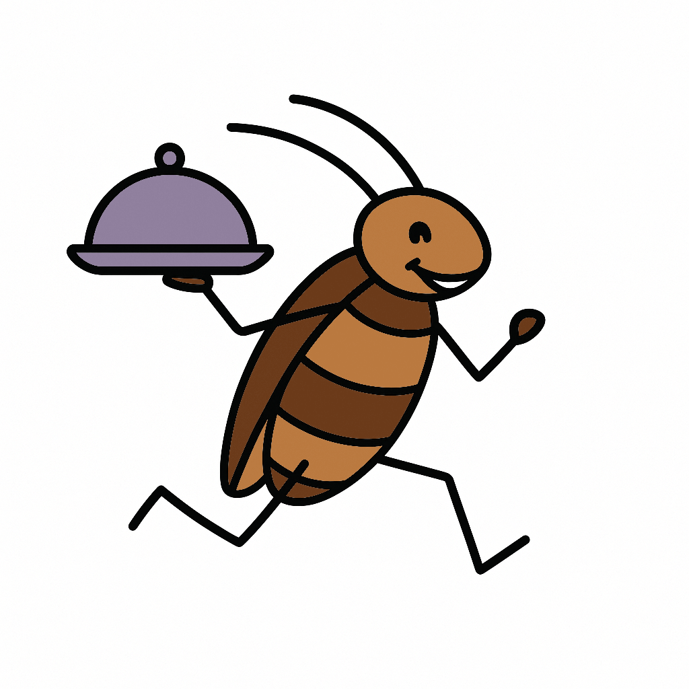

UNDER DEVELOPMENT
Food safety violations reported in the past year by the Allegheny County Health Department.
Click a marker to view details and find links to full inspection reports.
Data updated daily.
GitHub Repo | Connect on LinkedIn